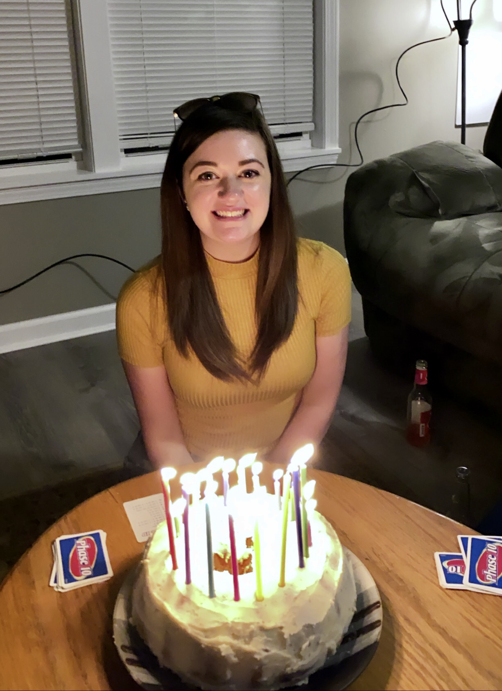

I am from Middletown, New York, about an hour north of New York City.
I am a second year master's student in the School of Communication. My research is largely based in political public relations, but I also do some media effects research on the mediatization of mass shootings.
This fall, I am applying to six doctoral programs to continue my studies. I am applying to the University of Florida, University of Oklahoma, Temple University, University of Missouri, Texas Tech, and the University of Texas at Austin. I am not sure which is my top pick, but I am definitely torn between Florida, Temple, and Missouri!
Surviving this pandemic
This is how I am getting things done this semestser, even with the pandemic and ugly things in the news. It can be hard to find things to keep you happy, and sometimes these serve more as distractions than anything else. I remember when I watched The Tiger King with my parents in the beginning of the pandemic, each time we would turn it off, we would say that we had to "get back to the world ending now."
Things I do
- Read books
- Listen to music (music is constantly on in my house)
- Binge television
- I teach at Virginia Tech